Research Map
Where my research is set, with a main finding and figure from each paper. Select a country to see its papers; select a figure to enlarge it.
Brazil
LandLand Registration and Conflict Reduction: Evidence from the Brazilian Amazon
Early rollout of Brazil's rural environmental registry (CAR) in Pará cut land conflicts by 11.5% and land-related death threats by 10%.
ForestsBeyond the Canopy: How Satellite Data Detection Thresholds Influence Policy Evaluation and Deforestation Behavior
Official monitoring misses clearings under 6.25 ha, which overstates the effect of municipal blacklisting (47.6% vs. 31.2%). Landholders shifted to smaller clearings.
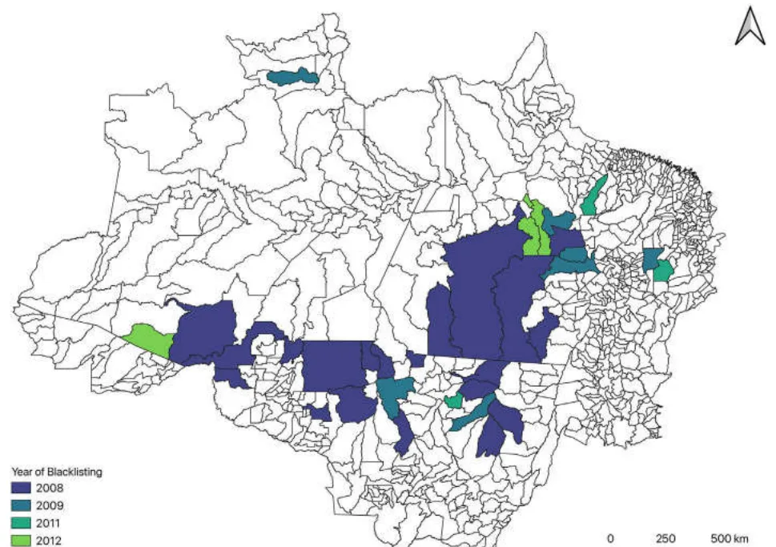
Map Municipalities blacklisted, by year (JEEM 2025, CC BY 4.0) 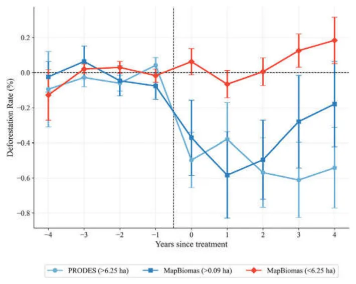
Result Effect of blacklisting, by satellite product (JEEM 2025, CC BY 4.0) LandCollective Property Rights Lead to Secondary Forest Growth in the Brazilian Amazon
Indigenous territories with secure tenure regrow about 5% more secondary forest on previously cleared land, and their secondary forests are about two years older.
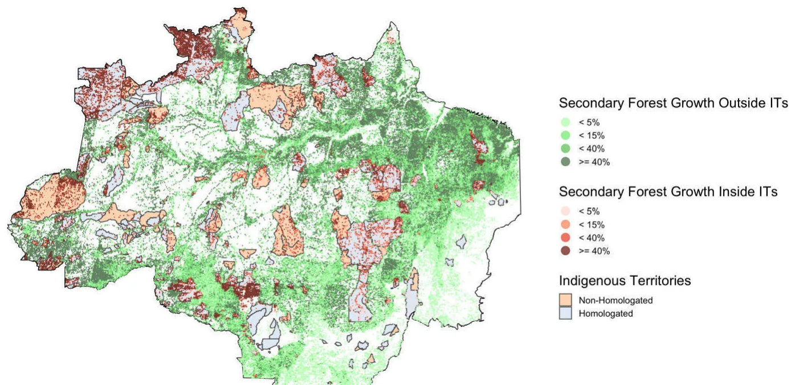
Map Secondary forest inside and outside Indigenous territories, 2000 (PNAS 2023, CC BY-NC-ND 4.0) 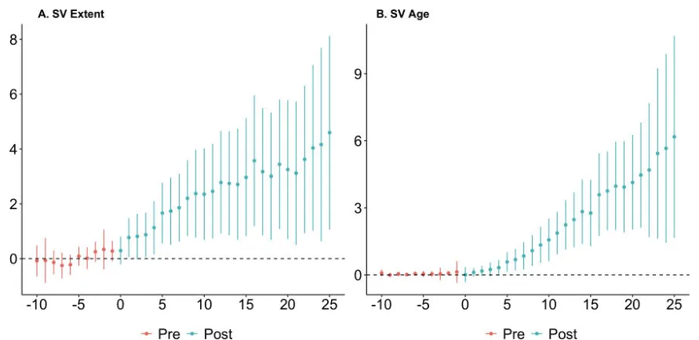
Result Secondary forest extent and age after full tenure (PNAS 2023, CC BY-NC-ND 4.0) LandClearing to Claim: The Perverse Incentives of Land Regularization in the Brazilian Amazon
Granting title for “productive use” raises deforestation in the years before titling, and landholders redraw boundaries just below Forest Code size thresholds.
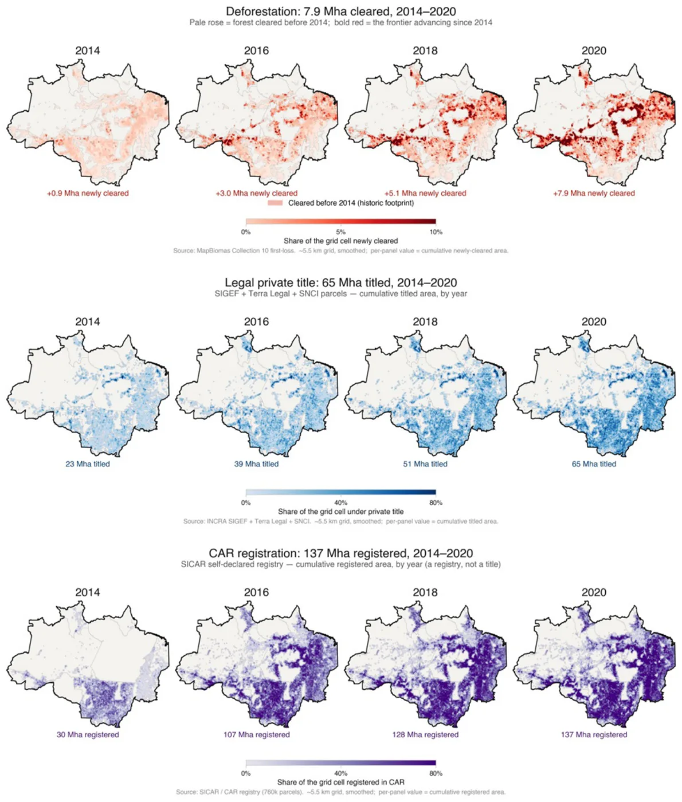
Map Deforestation, private titles and CAR registration, 2014–2020 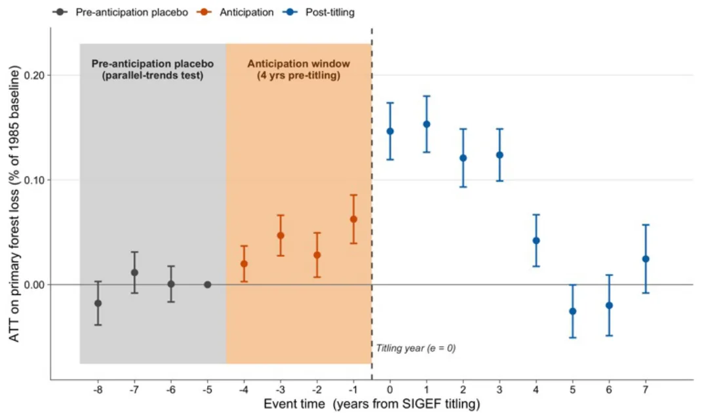
Result Forest loss before and after titling ForestsImproving Environmental Outcomes Through Investments in Local Governance: Evidence from Brazil
Pará's Green Municipalities Program is associated with 12% less deforestation a year and 7% more secondary forest. Its carbon benefits exceed its costs.
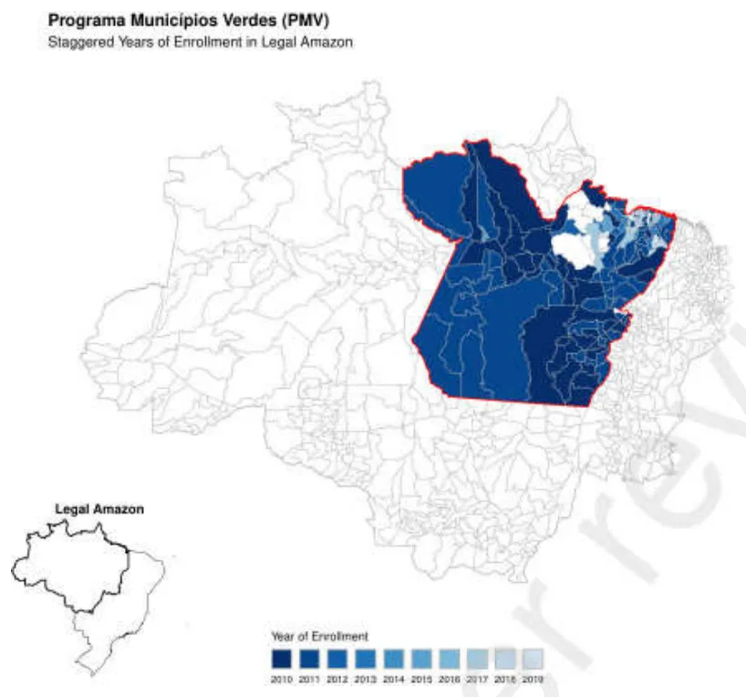
Map Enrollment in the Green Municipalities Program, 2010–2019 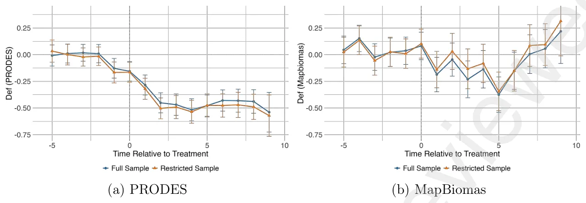
Result Effect of the program on deforestation ForestsDrought-Induced Deforestation in the Brazilian Amazon
Drought raises deforestation only where family farms dominate, accounting for about 331 km² of primary forest cleared in 2006–2019.
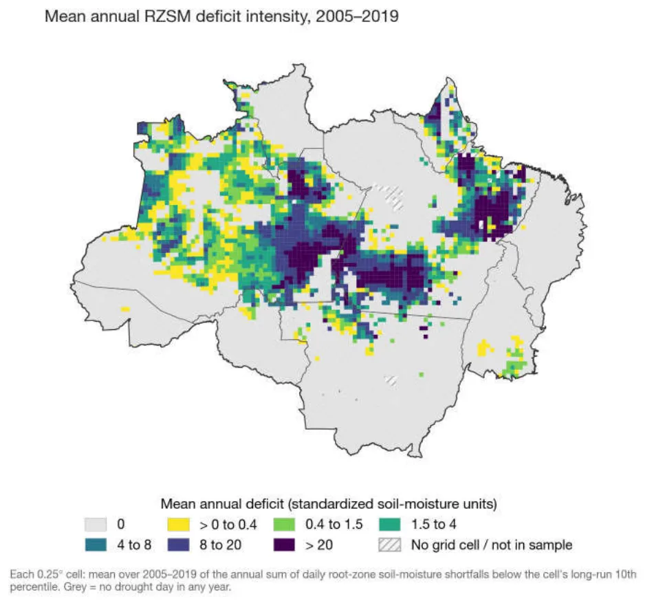
Map Mean annual drought intensity, 2005–2019


United States
HealthPrimary Care, Weather, and the Missed Opportunity for Savings
Extreme weather strains whole health systems at once. We set out payment and data reforms that let primary care act before heat waves, smoke and storms hit.
WaterGross External Damages of Water Pollution in the United States
The first national estimates of nutrient-pollution damages: $35–100 billion a year, with municipal wastewater contributing more than agriculture.
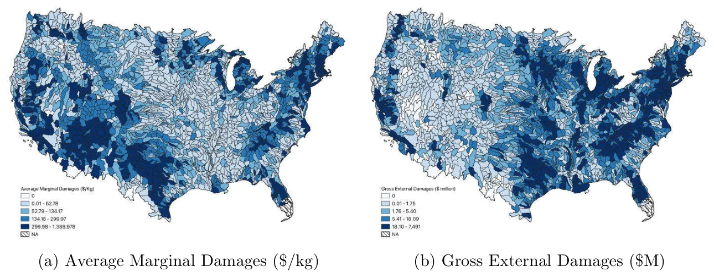
Map Marginal and total damages by watershed 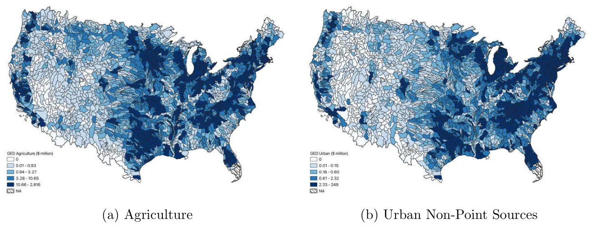
Result Damages from agriculture vs. urban runoff ForestsForest Disease, Wildfire Risk, and Recreational Welfare: Evidence from the USA
PollutionHazardous Waste Sites Alter Regional Soil Chemistry: Evidence from 80,000 Soil Tests in Tennessee


India
ForestsIncentives for Rural Households to Establish Tree Cover on Agricultural Land in Andhra Pradesh, India
Larger farms, longer tenure and off-farm work make households more likely to plant trees. Irrigation, distant plots and higher elevation make them less likely.
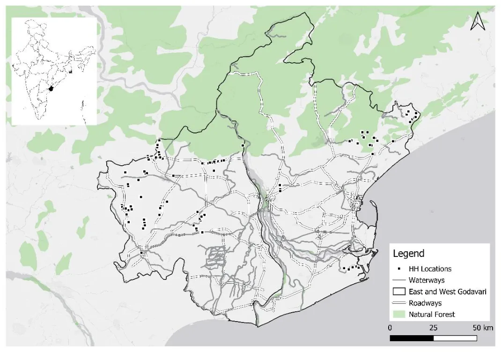
Map Sampled villages in East and West Godavari WaterUnintended Consequences of a Large Irrigation Project for Groundwater Recharge
Surface water from the world's largest irrigation canal raised groundwater levels by 80% of baseline.
ClimateThirteenth Month of a Drought Year: Agricultural Shocks and Judicial Outcomes in India
WaterThe Agrarian Cost of Groundwater Depletion in India

China
ClimateThe Cold, Hard Truth: Evidence from Heterogeneous Snowpack Insulation Effect on Winter Wheat Yields in China
Each additional freezing degree day cuts winter wheat yields by 2.37 kg/ha. Snow cover protects yields on the most productive farms.
Sub-Saharan Africa
ForestsThe Human Well-Being Outcomes of Tree Plantations in Sub-Saharan Africa: A Reassessment of Evidence Using Longitudinal Subnational-Year Data
Across 12 countries, more land in tree plantations raised a wealth index by over a third and income per capita by $205–395 a year, but did not move the Human Development Index.
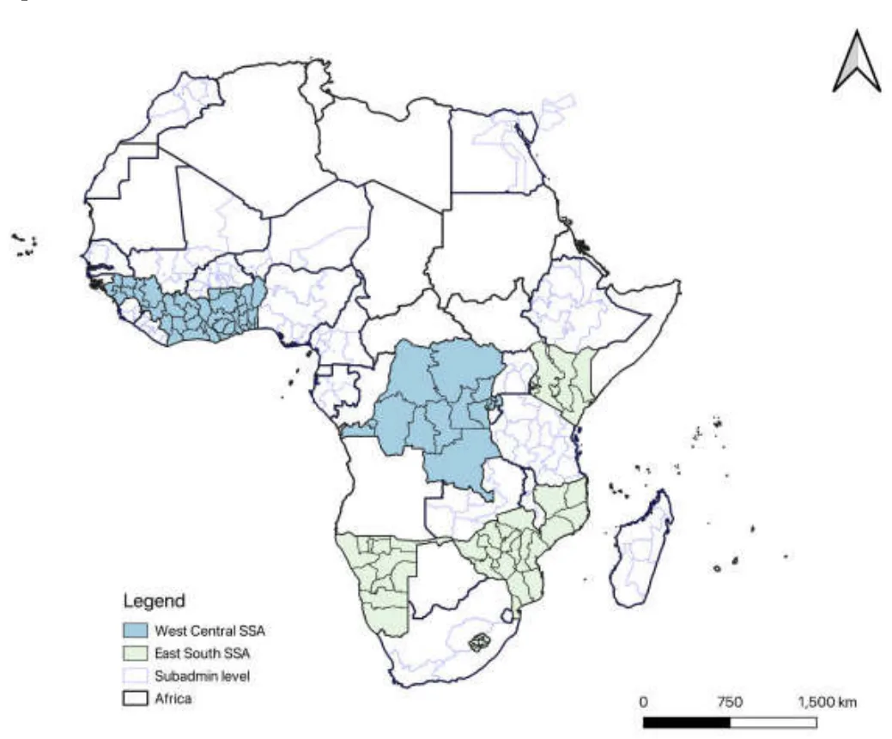
Map Countries and regions in the study ForestsDisease at the Root, Deforestation at the Edge: Cassava Epidemic and Deforestation in Uganda

Full citations and PDFs are on the Research page. Boundaries: Natural Earth.